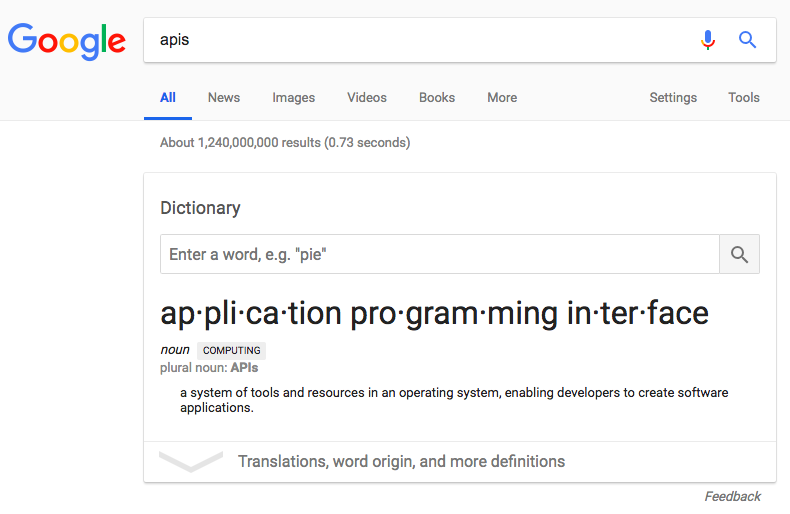

Kin Lane, the API Evangelist
API Discovery In The Real World Is Complicated
RESTFEST Greenville
September 2018


What Does API Discovery Mean to You?
API Root?
Hypermedia?
ProgrammableWeb?

Google?
Why Is API Being Discovered?
Looking For New APIs
Use In My Application(s)

Planning For Team(s)
Planning For Clients / Customers
Does This Service Have An API?

Developing An API
Find my API
Looking for public API
Looking For Internal API
APIs Across Organization
APIs Using Same Pattern
API Details At Develop Time
API Details At Run Time
API Details At Manage Time
API Details For iPaaS
API Details For Service Mesh
Find APIs
ProgrammableWeb?
Google?
Rapid API
APIs.io
APIs.guru
Google API Discovery
IDE
GitHub
Be Found
API Definitions
JSON Home
Schema.org
Known Knowns ~ Known Unknowns ~ Unknown Unknowns
API Operations
APIs.json
Presidential Innovation Fellow (PIF)
Data.json
Overview
Documentation, Plans, Pricing
OpenAPI, Postman
Twitter, Github
API Commons
Plans, SDK, SLA
APIs.io
The API Stack

The API Gallery
Publish To Github
Search APIs
/resource/path
Search by Path
This API does something amazing.
Search by Summary
?query=whatver&order=asc
Search by Parameter
?ticker=aapl
Search by Enumerator
API Rating
Find By Activity
Find By Reliability
Find By Price
Find By Access
Find By SLA
Find By Team
Stortyelling

Speak

Listen
The End
By Kin Lane
@kinlane